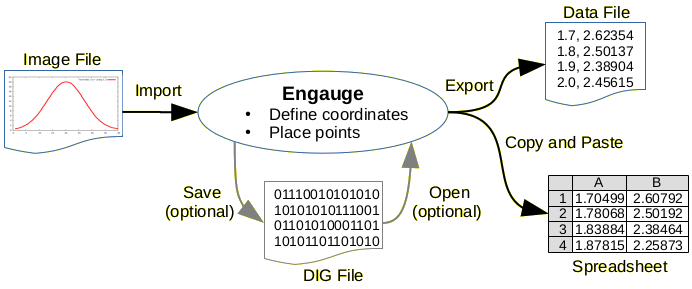

|

|

|
|

|
The Engauge Digitizer tool accepts image files (like PNG, JPEG and TIFF) containing graphs, and recovers the data points from those graphs. The resulting data points are usually used as input to other software applications. Conceptually, Engauge Digitizer is the opposite of a graphing tool that converts data points to graphs. The process is shown below - an image file is imported, digitized within Engauge, and exported as a table of numeric data to a text file. Work can be saved into an Engauge DIG file.

Engauge users range from one-time users digitizing a single image file, to large government and commercial organizations managing databases of thousands of image files.
Interested in translating Engauge to another language? We welcome translations of file translations/engauge.ts to other languages using linguist installed on your computer, or your browser at Transifex.
Top translations: engauge-digitizer
Released Versions
Engauge Digitizer is distributed with most Linux distributions and through the Mac App Store. Releases are also available for Linux, OSX and Windows operating systems as downloads:
-
Version 10.11 (10/27/2018) highlights multi-valued sections in functions, ensures there is always at least one curve, and handles large dynamic ranges in documents with 4 axis points
-
Version 10.10 (9/17/2018) has much faster and more accurate grid line removal, a new feature to extract the image using the command line, and the Curve Fitting window now offers higher order polynomial fits. As counted by cccc, the project software reached 40,000 single lines of code (SLOCs).
-
Version 10.9 (7/29/2018) has improved protection for inconsistent inputs in the user interface and opened files, and safer installation by the Linux installer
-
Version 10.8 (7/2/2018) has complete translations for many languages, cygwin support, more error messages for Windows issues, a command line export option, support for file names with multiple periods, and ability to handle inconsistent point coordinates when editing points
-
Version 10.7 (6/3/2018) stays in the same directory when loading or saving files
-
Version 10.6 (4/8/2018) supports flathub release
-
Version 10.5 (4/7/2018) adds pdf file support to Windows releases, and fixes crash on certain log data cases
-
Version 10.4 (10/10/2017) gracefully handles too many grid lines, handles commas in csv exports, and no longer hides status bar details for right-to-left languages
-
Version 10.3 (8/28/2017) added Japanese translations, and translations for recent code changes
-
Version 10.2 (8/20/2017) enhanced zoom control
-
Version 10.1 (7/20/2017) improved export formatting and copy/paste support
-
Version 10.0 (3/31/2017) supports maps with a scale bar
-
Version 9.8 (12/10/2016) does not trigger false alarm in antivirus software
-
Version 9.7 (11/28/2016) has a minor bug fix and new documentation for Fedora Linux installations
-
Version 9.6 (11/21/2016) has minor bug fixes
-
Version 9.5 (10/8/2016) has minor bug fixes
-
Version 9.4 (9/30/2016) has additional language translations
-
Version 9.3 (8/29/2016) can be used on smaller monitors
-
Version 9.2 (8/27/2016) has minor bug fixes
-
Version 9.1 (7/30/2016) has minor bug fixes
-
Version 9.0 (7/18/2016) adds optional cropping of input images, geometry window with export, graph point coordinate editing, hover highlighting of points, and settings reset option in the command line
-
Version 8.3 (7/7/2016) imports PDF files and allows replacement of the background image
-
Version 8.2 (6/8/2016) prevents lost Export settings, formats export files for gnuplot, and handles relations with fewer than 3 points.
-
Version 8.1 (5/30/2016) fixes an issue with lost points after an Undo and then Redo, and another issue with loading of versions 6 and 7 DIG files into version 8.
-
Version 8.0 (5/28/2016) adds grid line display for fine adjustments, fixes multi-coordinate systems, and supports OSX releases from the Mac App Store.
-
Version 7.2 (4/5/2016) fixes loading of version 5.1 files and frozen export settings dialogs.
-
Version 7.1 (3/25/2016) offers extra control over the export format, and support for the OSX operating system.
-
Version 7.0 (3/5/2016) offers an advanced import mode for (1) multiple coordinate systems in the same image and/or (2) axes with only one known coordinate (floating axes). Files can also be imported by copying and pasting.
-
Version 6.2 (11/4/2015) now accepts dragged DIG files, and adds a ZIP file for installing in Windows without administrator access privileges.
Version 6.1 (10/31/2015) can load DIG files from earlier versions of Engauge Digitizer.
-
Version 6.0 (10/23/2015) of Engauge 6 was released. This is a major rewrite of the 10 year old Engauge Digitizer software project that once lived on sourceforge.net. The replacement is required since the Qt3 toolkit that Engauge relies on is disappearing. Engauge-Digitizer uses the new Qt5 library which should be available for many years, and also offers many new features.
Features
Features in released versions of Engauge-Digitizer:
- Grid lines are displayed for fine adjustments of the axis points that define the coordinate systems
- Automated line and point extraction rapidly digitizes data
- Image processing for separating important details from background information
- Undo/redo of all operations means recovering from mistakes and experimenting with options is painless
- Installers for Windows and OSX operating systems, and repository packages for Linux make installation easy
- Wizard provides an interactive tutorial to explain the basic steps
- Wizard creates a checklist guide to interactively leads user through steps from file import to file export
- Cubic spline interpolation between points gives more accurate curves with fewer points
- Axes Checker briefly highlights the axes when they are defined or modified, to reveal entry mistakes
- Graph coordinates can be specified as date and time values, or as degrees, minutes and seconds
- File import and data export by drag-and-drop and copy/paste
- Test suite for regression testing minimizes code breakage as new features are added
- Multiple coordinate systems in the same image can be digitized in advanced mode
- Axes with only one known coordinate (floating axes) can be digitized in advanced mode
- Geometry Window displays geometric information about the selected curve
- Curve Fitting Window fits a polynomial function to the selected curve
Installation
Engauge can be installed using repository packages for popular Linux distributions of Linux or the Mac App Store for OSX (easiest methods), or by downloading pre-built binaries for Windows and Linux (slightly less easy). The pre-built binaries are available from the engauge-digitizer project at github.com, in the Releases page. The final option for installing is to build the software from the source code (very difficult). Building the software from the source code is accomplished by following the steps in the BUILD file that is found in the main directory. The build process can take as little as one hour in Linux or as long as several hours in Microsoft Windows.
Citations
- Suggested permanent citation: Mark Mitchell, Baurzhan Muftakhidinov and Tobias Winchen et al, "Engauge Digitizer Software." Webpage: http://markummitchell.github.io/engauge-digitizer, Last Accessed:
- Latest release:

Contributors
The author, Mark Mitchell, extends many thanks to Zbigniew Jędrzejewski-Szmek, Baurzhan Muftakhidinov, Tobias Winchen (Ubuntu), and Antonio Trande (Fedora) for software development. Thanks to Jörg Weingrill, Stefan Langer and other translators for language translations. Thanks to Devin Lane for spline interpolation. Finally, thanks to users to asking questions and providing excellent feedback.